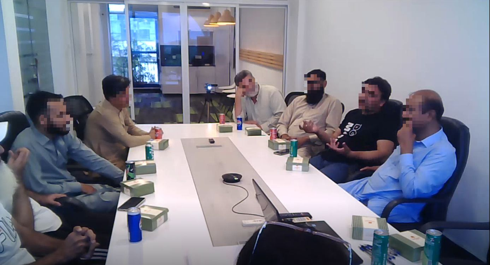
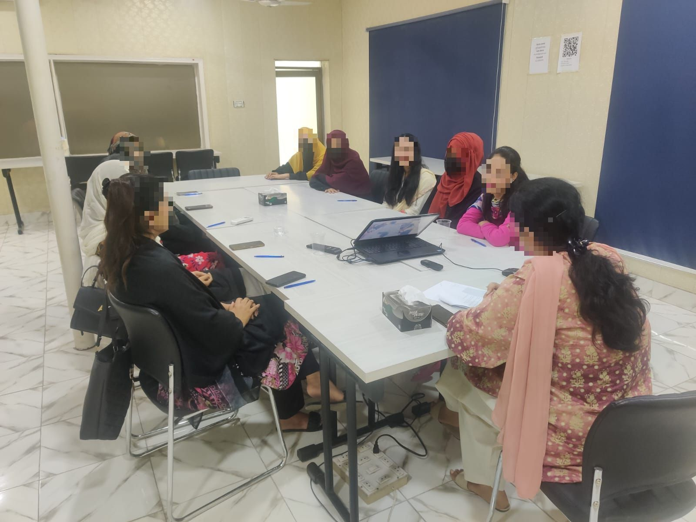
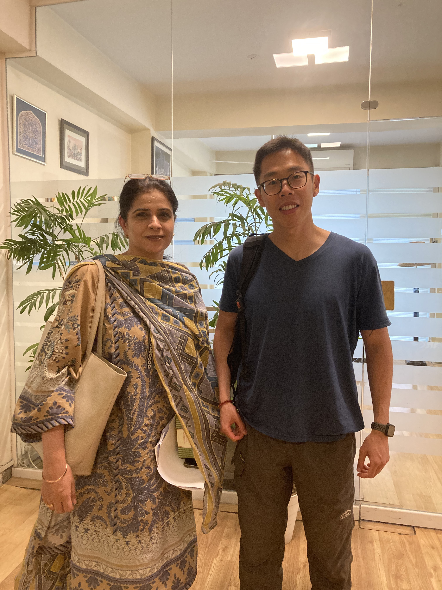

Michael Huang میکائیل ہوانگ 黃樹彥
پھر ملیں گے اگر خدا لایا - میر تقی میر

Fieldwork: June 2024 – Islamabad and Lahore
Overview
In June 2024, I conducted two focus group discussions on foreign aid in Pakistan, one in Islamabad and one in Lahore, in collaboration with Gallup Pakistan. These discussions brought together diverse participants to reflect on how they perceive foreign aid, its donors, and its relationship to domestic politics and everyday life.
The discussions centered on how media coverage and political narratives shape trust in different aid donors, local development experiences and whether aid projects are seen as responsive to community needs. Together, these conversations provide a grounded view of how citizens interpret promises, delivery, and credit-claiming around foreign aid.
Insights from these focus groups inform my broader research agenda on foreign aid, accountability, and trust: they help connect large-scale statistical work with the lived experiences and narratives of Pakistani citizens across cities.
Gallery

Focus group discussion on foreign aid – Islamabad

Focus group discussion on foreign aid – Lahore

Discussion leader Prof. Shamaila Athar and me
For more information about this fieldwork or related projects, please contact me at shuyanh2@illinois.edu.